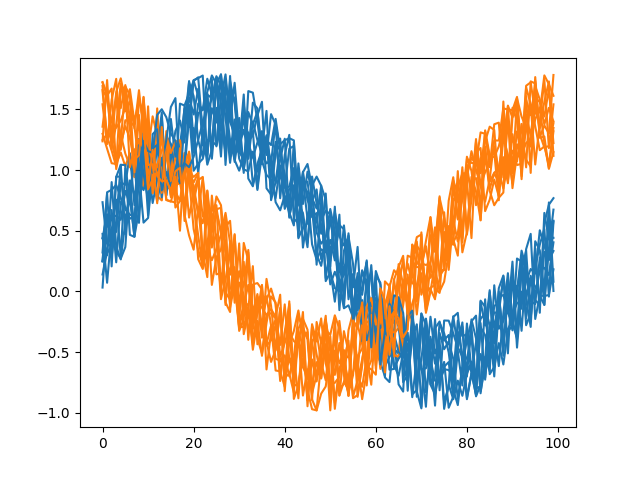

Plotting Ungrouped Series¶
Here there are the classes that plot ungrouped series
-
class
plotszoo.series.SeriesParade(data, column)¶ Plot one column from all the series
- Args:
- data
plotszoo.data.DataCollectionwith some series- column
The column to plot
Example:
import numpy as np import pandas as pd import os import matplotlib.pyplot as plt import plotszoo np.random.seed(0) num_series = 10 samples = 100 noise_level = 0.8 x = np.linspace(0, np.pi*2, samples) types = [] series = {} for _ in range(0, num_series): noisy_sin = np.sin(x) + np.random.rand(samples)*noise_level series[len(types)] = pd.DataFrame(noisy_sin, columns=["value"]) types.append("sin") noisy_cos = np.cos(x) + np.random.rand(samples)*noise_level series[len(types)] = pd.DataFrame(noisy_cos, columns=["value"]) types.append("cos") data = plotszoo.data.DataCollection() data.set_scalars(pd.DataFrame(types, columns=["type"])) data.set_series(series) fig, ax = plt.subplots() series_parade = plotszoo.series.SeriesParade(data, "value") series_parade.plot(ax, color_fn=lambda s: ["sin", "cos"].index(s["type"])) fig.savefig(os.path.join(os.path.dirname(os.path.realpath(__file__)), "images/SeriesParade.png"))
-
plot(ax, fixed_color=None, color_fn=None, cmap='tab10')¶ Plot the series parade
- Args:
- ax
matplotlibaxes to plot to- fixed_color
color to use for all the plots
- color_fn
function to compute the color from the scalars
- cmap
matplotlibcolormap to use (Default:tab10)
{kind=link}